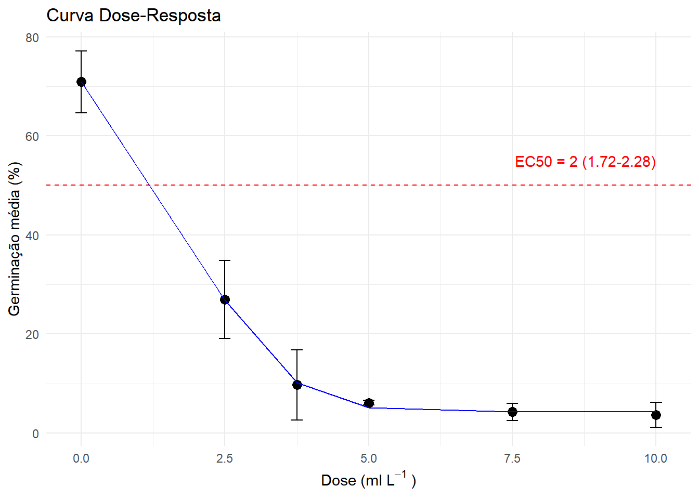
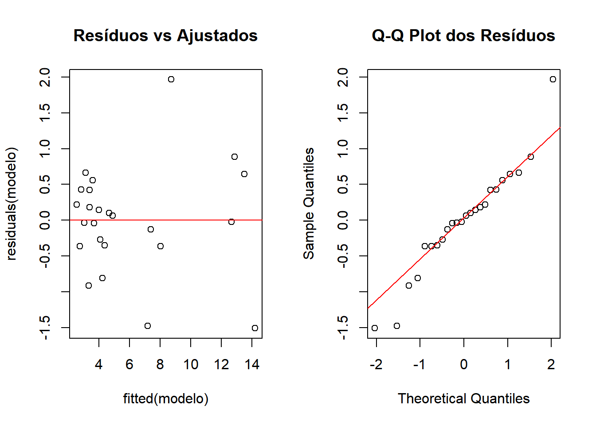
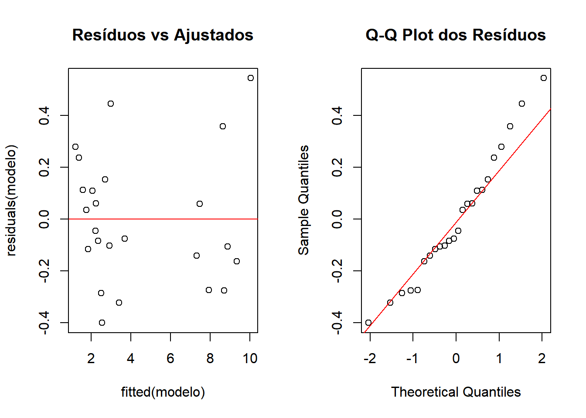
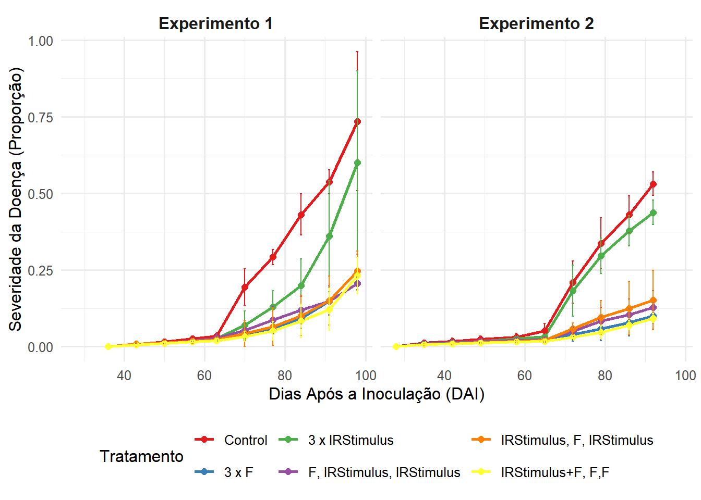

library(tidyverse)
library(drc)
library(gsheet)
library(kableExtra)
library(DT)
library(leaflet)
library(patchwork)
library(performance)
library(emmeans)
library(DHARMa)
library(multcomp)
library(epifitter)
library(lme4)
library(agricolae)
library(qqplotr)CARREGAMENTO DE PACOTES
LOCALIZAÇÃO DOS EXPERIMENTOS
Os experimentos foram conduzidos na área experimental do Departamento de Fitopatologia da Universidade Federal de Viçosa, município de Viçosa, Minas Gerais, Brasil, localizada na região sudeste do estado de Minas Gerais (20º44’44’‘S, 42º50’59’’O e 661 m acima do nível do mar). O primeiro experimento foi conduzido de novembro de 2023 a março de 2024 (Experimento 1; E1) e o segundo experimento de dezembro de 2023 a abril de 2024 (Experimento 2; E2).
leaflet() %>%
addTiles() %>%
setView(lng = -42.8497, lat = -20.7453, zoom = 16) %>%
addMarkers(lng = -42.8497, lat = -20.7453,
popup = "Localização do experimento")ANÁLISE DE GERMINAÇÃO DE UREDÓSPOROS (GU)
A germinação de uredósporos (GU) é um bioensaio crítico para avaliar a sensibilidade de patógenos a tratamentos. Nesta seção, modelamos a curva dose-resposta usando um modelo log-logístico, calculamos a inibição percentual em relação ao controle e determinamos a EC50 (dose para 50% de inibição). Os resultados são apresentados em gráficos com intervalos de confiança e tabelas sumarizadas, destacando a eficácia do tratamento em suprimir a germinação.
GU <- gsheet2tbl("https://docs.google.com/spreadsheets/d/1zEsVt_nnmydEUBJjkyMrOLHEu6pXeM-SmwTXyEoNbmg/edit?gid=0#gid=0")
GU <- GU %>%
mutate(
REPETICAO = as.factor(REPETICAO),
DOSE = as.numeric(DOSE)
)
head(GU) %>%
kable(align = "c") %>%
kable_styling(full_width = FALSE)| DOSE | REPETICAO | UREDOSPORO | UREDOSPOROS_GERMINADOS | TAXA_DE_GERMINAÇÃO |
|---|---|---|---|---|
| 0.0 | 1 | 146 | 104 | 71.23 |
| 0.0 | 2 | 205 | 137 | 66.82 |
| 0.0 | 3 | 67 | 51 | 76.11 |
| 0.0 | 4 | 347 | 241 | 69.45 |
| 2.5 | 1 | 252 | 83 | 32.93 |
| 2.5 | 2 | 193 | 45 | 23.31 |
controle <- GU %>%
filter(DOSE == 0) %>%
summarise(mean_controle = mean(TAXA_DE_GERMINAÇÃO)) %>%
pull()
GU2 <- GU %>%
group_by(DOSE) %>%
summarise(
mean_germ = mean(TAXA_DE_GERMINAÇÃO),
sd_germ = sd(TAXA_DE_GERMINAÇÃO),
n = n()
) %>%
mutate(
inib = ((controle - mean_germ)/controle)*100,
CI_lower = mean_germ - qt(0.975, df = n-1) * sd_germ/sqrt(n),
CI_upper = mean_germ + qt(0.975, df = n-1) * sd_germ/sqrt(n)
) %>%
round(digits = 2)
head(GU2) %>%
kable(align = "c") %>%
kable_styling(full_width = FALSE)| DOSE | mean_germ | sd_germ | n | inib | CI_lower | CI_upper |
|---|---|---|---|---|---|---|
| 0.00 | 70.90 | 3.92 | 4 | 0.00 | 64.67 | 77.13 |
| 2.50 | 26.93 | 4.95 | 4 | 62.01 | 19.06 | 34.81 |
| 3.75 | 9.69 | 4.44 | 4 | 86.34 | 2.62 | 16.76 |
| 5.00 | 6.08 | 0.29 | 4 | 91.42 | 5.62 | 6.54 |
| 7.50 | 4.24 | 1.07 | 4 | 94.02 | 2.54 | 5.95 |
| 10.00 | 3.64 | 1.58 | 4 | 94.86 | 1.13 | 6.16 |
MODELAGEM DA CURVA DOSE-RESPOSTA
A modelagem da curva dose-resposta é essencial para quantificar a relação entre a concentração do tratamento e seu efeito na germinação de uredósporos. Nesta análise:
Utilizamos um modelo não linear (drm com função W1.4) para estimar parâmetros como:
E<sub>max</sub>: Máxima inibição observada.
EC50: Dose para 50% do efeito (com IC 95%).
Inclinação da curva: Sensibilidade do patógeno a variações de dose.
A validação do modelo incluiu análise de resíduos e teste de normalidade, garantindo robustez nas estimativas.
EC <- drm(
mean_germ ~ DOSE,
data = GU2,
fct = W1.4()
)
summary(EC)
Model fitted: Weibull (type 1) (4 parms)
Parameter estimates:
Estimate Std. Error t-value p-value
b:(Intercept) 1.991112 0.189631 10.4999 0.0089489 **
c:(Intercept) 4.237743 0.575215 7.3672 0.0179302 *
d:(Intercept) 70.910037 0.849463 83.4763 0.0001435 ***
e:(Intercept) 2.402485 0.050044 48.0073 0.0004336 ***
---
Signif. codes: 0 '***' 0.001 '**' 0.01 '*' 0.05 '.' 0.1 ' ' 1
Residual standard error:
0.8496181 (2 degrees of freedom)par(mfrow = c(1, 2))
plot(residuals(EC) ~ fitted(EC), main = "Resíduos vs Ajustados")
abline(h = 0, col = "red")
qqnorm(residuals(EC), main = "Q-Q Plot dos Resíduos")
qqline(residuals(EC), col = "red")
EC50_result <- ED(EC, 50, interval = "delta")
Estimated effective doses
Estimate Std. Error Lower Upper
e:1:50 1.99856 0.06471 1.72014 2.27699cat(paste("EC50 =", round(EC50_result[1], 2),
"(", round(EC50_result[3], 2), "-", round(EC50_result[4], 2), ")"))EC50 = 2 ( 1.72 - 2.28 )VISUALIZAÇÃO DA CURVA DOSE-RESPOSTA
plot_curva <- ggplot(data = GU2, aes(x = DOSE)) +
geom_point(aes(y = mean_germ), size = 3) +
geom_errorbar(aes(ymin = CI_lower, ymax = CI_upper), width = 0.2) +
geom_line(aes(y = fitted(EC)), color = "blue") +
geom_hline(yintercept = 50, linetype = "dashed", color = "red") +
annotate("text",
x = max(GU2$DOSE),
y = 55,
label = paste0("EC50 = ", round(EC50_result[1], 2),
" (", round(EC50_result[3], 2), "-",
round(EC50_result[4], 2), ")"),
hjust = 1,
color = "red") +
labs(x = expression("Dose (ml L"^-1~")"),
y = "Germinação média (%)",
title = "Curva Dose-Resposta") +
theme_minimal()
print(plot_curva)
CÁLCULO DA ÁREA ABAIXO DA CURVA (AACPD)
PTD <- gsheet2tbl("https://docs.google.com/spreadsheets/d/1zEsVt_nnmydEUBJjkyMrOLHEu6pXeM-SmwTXyEoNbmg/edit?gid=1680501439#gid=1680501439")
PTD <- PTD %>%
mutate(
SEVERIDADE = as.numeric(str_replace(SEVERIDADE, ",", ".")) / 100,
REPETIÇÃO = as.factor(REPETIÇÃO),
BLOCO = as.factor(BLOCO),
TRATAMENTO = as.factor(TRATAMENTO)
)
niveis_tratamento <- c("Control", "3 x F", "3 x IRStimulus",
"F, IRStimulus, IRStimulus",
"IRStimulus, F, IRStimulus",
"IRStimulus+F, F,F")
levels(PTD$TRATAMENTO) <- niveis_tratamento
PTD_2 <- PTD %>%
group_by(REPETIÇÃO, TRATAMENTO, DAE) %>%
summarise(
sev_mean = mean(SEVERIDADE),
sev_sd = sd(SEVERIDADE),
n = n()
) %>%
mutate(
sev_CI_lower = sev_mean - qt(0.975, df = n-1) * sev_sd/sqrt(n),
sev_CI_upper = sev_mean + qt(0.975, df = n-1) * sev_sd/sqrt(n)
)
head(PTD_2) %>%
kable(align = "c") %>%
kable_styling(full_width = FALSE)| REPETIÇÃO | TRATAMENTO | DAE | sev_mean | sev_sd | n | sev_CI_lower | sev_CI_upper |
|---|---|---|---|---|---|---|---|
| 1 | Control | 36 | 0.001000 | 0.0000000 | 4 | 0.0010000 | 0.0010000 |
| 1 | Control | 43 | 0.007125 | 0.0025617 | 4 | 0.0030487 | 0.0112013 |
| 1 | Control | 50 | 0.016500 | 0.0048990 | 4 | 0.0087046 | 0.0242954 |
| 1 | Control | 57 | 0.025875 | 0.0046256 | 4 | 0.0185147 | 0.0332353 |
| 1 | Control | 63 | 0.034375 | 0.0065749 | 4 | 0.0239129 | 0.0448371 |
| 1 | Control | 70 | 0.193750 | 0.0379418 | 4 | 0.1333761 | 0.2541239 |
VERIFICAÇÃO DA INTERAÇÃO ENTRE EXPERIMENTOS
PTD_3 <- PTD %>%
group_by(REPETIÇÃO, TRATAMENTO, BLOCO) %>%
summarise(
audpc = AUDPC(DAE, SEVERIDADE),
.groups = 'drop'
) %>%
mutate(
REPETIÇÃO = as.factor(REPETIÇÃO),
TRATAMENTO = as.factor(TRATAMENTO),
BLOCO = as.factor(BLOCO)
)
head(PTD_3) %>%
kable(align = "c") %>%
kable_styling(full_width = FALSE)| REPETIÇÃO | TRATAMENTO | BLOCO | audpc |
|---|---|---|---|
| 1 | Control | 1 | 12.6970 |
| 1 | Control | 2 | 14.1700 |
| 1 | Control | 3 | 12.6475 |
| 1 | Control | 4 | 13.7575 |
| 1 | 3 x F | 1 | 4.0025 |
| 1 | 3 x F | 2 | 3.6260 |
Interação
modelo_interacao <- lm(audpc ~ TRATAMENTO * REPETIÇÃO + BLOCO,
data = PTD_3)
anova_interacao <- anova(modelo_interacao)
kable(anova_interacao) %>%
kable_styling(full_width = FALSE)| Df | Sum Sq | Mean Sq | F value | Pr(>F) | |
|---|---|---|---|---|---|
| TRATAMENTO | 5 | 514.23090 | 102.8461808 | 235.120043 | 0.00e+00 |
| REPETIÇÃO | 1 | 28.11184 | 28.1118414 | 64.267407 | 0.00e+00 |
| BLOCO | 3 | 14.81787 | 4.9392901 | 11.291874 | 2.97e-05 |
| TRATAMENTO:REPETIÇÃO | 5 | 18.65931 | 3.7318624 | 8.531534 | 2.88e-05 |
| Residuals | 33 | 14.43486 | 0.4374199 | NA | NA |
if (anova_interacao["TRATAMENTO:REPETIÇÃO", "Pr(>F)"] < 0.05) {
message("Interação significativa encontrada. Analisando experimentos separadamente.")
} else {
message("Nenhuma interação significativa. Pode-se analisar os dados combinados.")
}ANÁLISE INDIVIDUAL PARA CADA EXPERIMENTO
analisar_experimento <- function(dados_experimento, exp_id) {
message(paste("\nAnálise para o Experimento", exp_id, "\n"))
modelo <- lm(audpc ~ TRATAMENTO + BLOCO,
data = dados_experimento)
cat("\nVerificação de pressupostos:\n")
teste_normalidade <- check_normality(modelo)
print(teste_normalidade)
p_heteroced <- check_heteroscedasticity(modelo)
cat("Teste de heterocedasticidade - p-value:", p_heteroced, "\n")
par(mfrow = c(1, 2))
plot(residuals(modelo) ~ fitted(modelo), main = "Resíduos vs Ajustados")
abline(h = 0, col = "red")
qqnorm(residuals(modelo), main = "Q-Q Plot dos Resíduos")
qqline(residuals(modelo), col = "red")
par(mfrow = c(1, 1))
if (p_heteroced < 0.05) {
message("Heterocedasticidade detectada (p = ", round(p_heteroced, 3), "). Aplicando transformação logarítmica.")
modelo <- lm(log(audpc) ~ TRATAMENTO + BLOCO,
data = dados_experimento)
cat("\nVerificação após transformação:\n")
print(check_normality(modelo))
p_heteroced_pos <- check_heteroscedasticity(modelo)
cat("Teste de heterocedasticidade após transformação - p-value:", p_heteroced_pos, "\n")
}
cat("\nTabela ANOVA:\n")
anova_result <- anova(modelo)
print(anova_result)
medias <- emmeans(modelo, ~ TRATAMENTO, type = "response")
cld_result <- cld(medias,
Letters = letters,
adjust = "tukey")
cv <- agricolae::cv.model(modelo) %>% round(2)
list(
modelo = modelo,
anova = anova_result,
medias = medias,
cld = cld_result,
cv = cv
)
}
resultados_exp1 <- analisar_experimento(filter(PTD_3, REPETIÇÃO == 1), 1)
Verificação de pressupostos:
OK: residuals appear as normally distributed (p = 0.290).
Teste de heterocedasticidade - p-value: 0.01269094 
Verificação após transformação:
OK: residuals appear as normally distributed (p = 0.083).
Teste de heterocedasticidade após transformação - p-value: 0.587577
Tabela ANOVA:
Analysis of Variance Table
Response: log(audpc)
Df Sum Sq Mean Sq F value Pr(>F)
TRATAMENTO 5 6.5872 1.31745 52.3843 5.755e-09 ***
BLOCO 3 0.3937 0.13124 5.2185 0.01147 *
Residuals 15 0.3772 0.02515
---
Signif. codes: 0 '***' 0.001 '**' 0.01 '*' 0.05 '.' 0.1 ' ' 1resultados_exp2 <- analisar_experimento(filter(PTD_3, REPETIÇÃO == 2), 2)
Verificação de pressupostos:
OK: residuals appear as normally distributed (p = 0.573).
Teste de heterocedasticidade - p-value: 0.1901227 
Tabela ANOVA:
Analysis of Variance Table
Response: audpc
Df Sum Sq Mean Sq F value Pr(>F)
TRATAMENTO 5 212.505 42.501 453.72 8.244e-16 ***
BLOCO 3 6.447 2.149 22.94 7.396e-06 ***
Residuals 15 1.405 0.094
---
Signif. codes: 0 '***' 0.001 '**' 0.01 '*' 0.05 '.' 0.1 ' ' 1TABELA RESUMO DOS RESULTADOS
extrair_dados_cld <- function(cld_obj) {
df <- as.data.frame(cld_obj)
tratamento <- if ("TRATAMENTO" %in% names(df)) {
as.character(df$TRATAMENTO)
} else if ("treatment" %in% names(df)) {
as.character(df$treatment)
} else if ("trt" %in% names(df)) {
as.character(df$trt)
} else {
as.character(rownames(df))
}
response <- if ("response" %in% names(df)) {
df$response
} else if ("emmean" %in% names(df)) {
df$emmean
} else if ("prob" %in% names(df)) {
df$prob
} else {
rep(NA, nrow(df))
}
group <- if (".group" %in% names(df)) {
df$.group
} else if ("group" %in% names(df)) {
df$group
} else {
rep("", nrow(df))
}
data.frame(
TRATAMENTO = tratamento,
response = as.numeric(response),
.group = as.character(group),
stringsAsFactors = FALSE
)
}
criar_tabela_final <- function() {
dados_exp1 <- extrair_dados_cld(resultados_exp1$cld) %>%
mutate(Experimento = "1",
response = round(response, 2))
dados_exp2 <- extrair_dados_cld(resultados_exp2$cld) %>%
mutate(Experimento = "2",
response = round(response, 2))
tabela <- bind_rows(dados_exp1, dados_exp2) %>%
pivot_wider(
names_from = Experimento,
values_from = c(response, .group),
names_glue = "Exp_{Experimento}_{.value}"
)
linha_cv <- data.frame(
TRATAMENTO = "CV (%)",
Exp_1_response = resultados_exp1$cv,
Exp_2_response = resultados_exp2$cv,
Exp_1_.group = "",
Exp_2_.group = "",
stringsAsFactors = FALSE
)
names(linha_cv) <- names(tabela)
tabela_final <- bind_rows(tabela, linha_cv)
colnames(tabela_final) <- c("Tratamento",
"AACPD Exp 1", "Grupo Exp 1",
"AACPD Exp 2", "Grupo Exp 2")
return(tabela_final)
}
tabela_final <- criar_tabela_final()
kable(tabela_final, align = "c") %>%
kable_styling(full_width = FALSE) %>%
add_header_above(c(" " = 1, "Experimento 1" = 2, "Experimento 2" = 2)) %>%
row_spec(nrow(tabela_final), bold = TRUE) %>%
footnote(general = "Médias seguidas pela mesma letra não diferem entre si pelo teste de Tukey (p < 0.05)")| Tratamento | AACPD Exp 1 | Grupo Exp 1 | AACPD Exp 2 | Grupo Exp 2 |
|---|---|---|---|---|
| IRStimulus+F, F,F | 3.12 | 1.74 | a | a |
| 3 x F | 3.44 | 2.11 | a | ab |
| IRStimulus, F, IRStimulus | 3.67 | 2.88 | a | c |
| F, IRStimulus, IRStimulus | 3.97 | 2.60 | a | bc |
| 3 x IRStimulus | 7.63 | 7.84 | b | d |
| Control | 13.30 | 9.24 | c | e |
| CV (%) | 9.84 | 6.95 | ||
| Note: | ||||
| Médias seguidas pela mesma letra não diferem entre si pelo teste de Tukey (p < 0.05) |
VISUALIZAÇÃO GRÁFICA DOS RESULTADOS
ggplot(PTD_3, aes(x = TRATAMENTO, y = audpc, fill = REPETIÇÃO)) +
geom_boxplot(alpha = 0.7) +
stat_summary(
fun = mean, geom = "point",
shape = 18, size = 3, color = "red",
position = position_dodge(width = 0.75)
) +
labs(
x = "Tratamentos",
y = "Área Abaixo da Curva de Progresso da Doença (AACPD)",
fill = "Experimento"
) +
theme_minimal(base_size = 12) +
theme(
axis.text.x = element_text(angle = 45, hjust = 1),
legend.position = "top"
) +
scale_fill_manual(
values = c("#1f78b4", "#33a02c"),
labels = c("Experimento 1", "Experimento 2")
)
ggplot(PTD_2, aes(x = DAE, y = sev_mean, color = TRATAMENTO)) +
geom_line(size = 1) +
geom_point(size = 2) +
geom_errorbar(
aes(ymin = sev_CI_lower, ymax = sev_CI_upper),
width = 0.5
) +
facet_wrap(~REPETIÇÃO,
labeller = labeller(
REPETIÇÃO = c("1" = "Experimento 1", "2" = "Experimento 2")
)) +
labs(
x = "Dias Após a Inoculação (DAI)",
y = "Severidade da Doença (Proporção)",
color = "Tratamento"
) +
theme_minimal(base_size = 12) +
theme(
legend.position = "bottom",
strip.text = element_text(face = "bold", size = 12)
) +
scale_color_brewer(palette = "Set1")